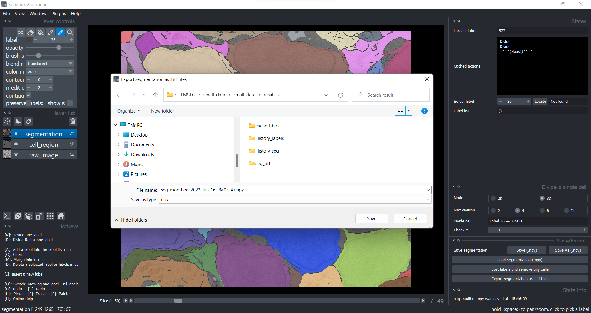
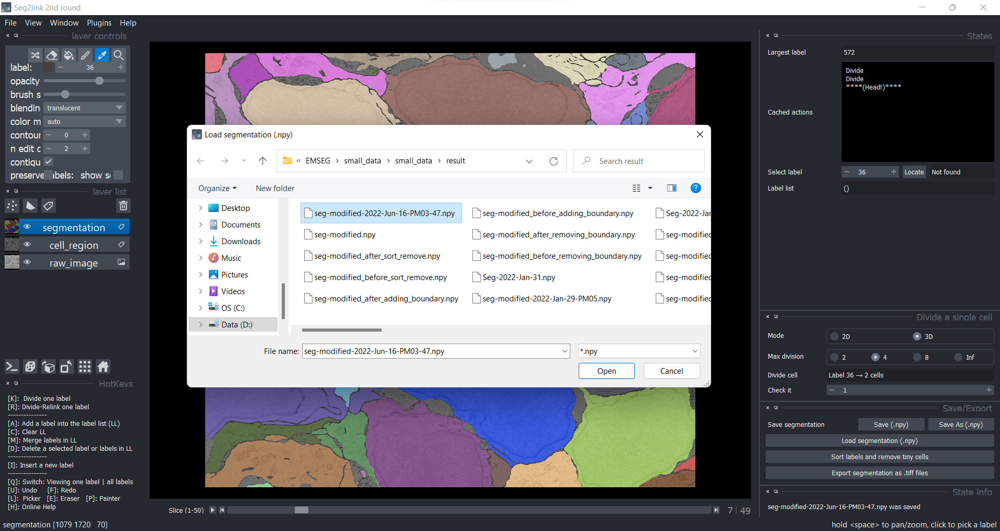
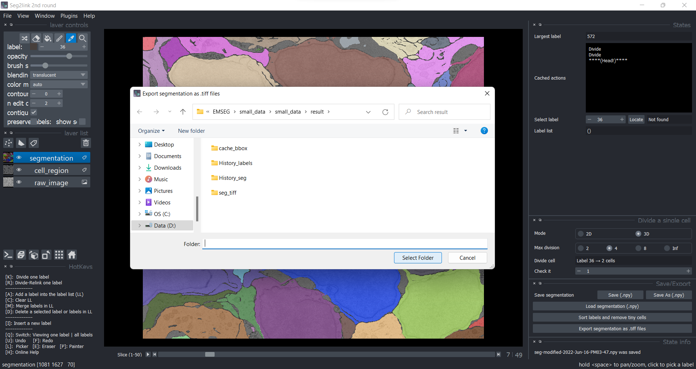

Save/Load/Export
Save and Load
Because saving the intermediate result is time-consuming in 3D correction, the program does not save it automatically. Instead, users must manually save the intermediate results after a certain amount of correction is completed.
1. Save
When you have finished a certain number of corrections in the 3D correction module, press the Save button. The program will save the current result as "seg-modified.npy." The old file will be overwritten.
2. Save as
When you need to save the segmentation results into a different file to avoid overwriting an old file, click the Save as button 
3. Load
When you need to load a segmentation result saved previously, click the Load segmentation button, choose the file you need, and then click the open button. 
Export
To export the result, click the Export button and then click Select Folder. The program will create a sub-folder called "seg-tiff" in which the exported 2D TIFF images will be saved.
- We recommend saving the exported results to the default folder to avoid confusion 